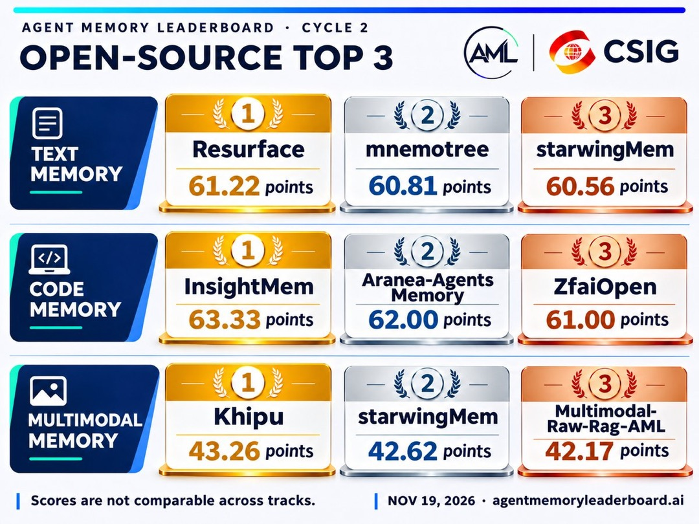
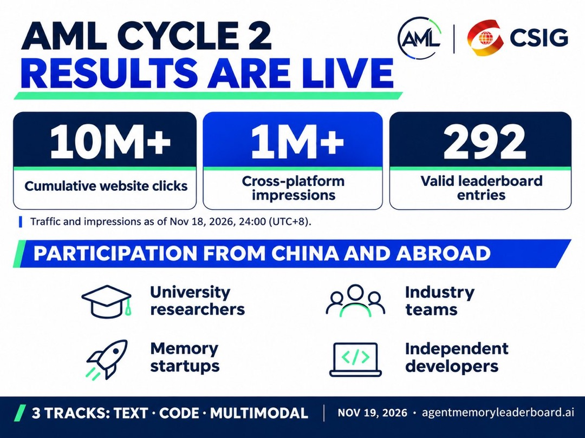

本期速览
01 抽取模型校验Agent答案原文出处
03 两套Prompt驱动体验与动效审查
04 AI接单按正常工期而非耗时定价
06 ARLoop开源循环注意力残差结构
07 MemoraX居AML记忆榜三榜第一
01｜抽取模型校验Agent答案原文出处
来源（X） · @Xudong07452910 · 2026-11-24 11:26
这篇讲用小型抽取模型给 Agent 做校验。返回的答案必须是原文里一模一样的片段，找不到就老老实实返回「not on page」，空字段留空，不让模型自己补。
我觉得可以直接放进 harness 里，写记忆前、出最终答案前都过一遍，对不上原文的打回去重查。
做 RAG、合同、发票这类文档 Agent 的，值得收藏。
引用内容
elvis @omarsar0
中文译文
原文
02｜T3 Code依赖本地CLI做编排
来源（X） · @antiAIvo · 2026-11-23 17:46
就去了解下它到底是个什么东西？
拆开看原理其实很直接：它自己既没接大模型 API，也没重写 Agent
本质上就是给 Claude Code、Codex 这些官方 CLI
套了一层统一的 UI 壳，顺手在下面加了一套任务编排管理
所以用它有个硬前提：你电脑上必须先装好各家的本地 CLI
它底层是直接把本地 CLI 当子进程拉起来调的
像 Claude、Cursor 那种官方桌面客户端它根本调不了
不过看下来，它主打的“多模型混用 / 中途切模型”
说一下我的一点反向看法🤔
举一个真实场景例子：
你使用T3，claude和GPT切换用，会出现什么问题呢？
Claude 和 OpenAI 两边底层的会话压根对不起来
切模型本质上就是新开个窗口
把本地存的记录打包塞过去硬交接，真要来回切着聊
不仅 Prompt Cache 直接失效，对话也容易搞乱
普通人哪会这么干，而且各大官方客户端已经够顺手了
真没必要多套这一层，除非是真有需求的开发人员吧
我还没有用，由于我对后端很熟
所以只是看了官网的介绍，就大概能猜出它的实现
简单写一点感想，后面可能会用下试试，不过有点懒得折腾
主要目前我这几个agent桌面端就能满足我的需求了
而且，我几乎不用CLI，觉得有点反常
就像有IDE了，还在用命令行写代码.........
https://t3.codes/
03｜两套Prompt驱动体验与动效审查
来源（X） · @Khazix0918 · 2026-11-24 14:12
1. 复杂应该留给我们系统，不要留给用户，用户体验至高无上。
按这条原则审查我们整个项目，同时也让Gemini当整个的方案、文案、交互顾问，重点看：
- 系统能判断的，不留给用户
- 此刻没用的，就不出现
- 能替人做的，就直接做
- 同一件事，处处一样
- 按下去有回应，再按能收回
- 不打断人手上的事
- 常用的好做，会丢东西的难误碰
- 界面自己说明自己
然后直接修好，修完亲手用一遍确认，再用GPT帮忙做一下审查。最后直接合并上线。
2. 把项目的动效整体做到苹果那种细腻、丝滑的水准。你自己审查整个项目，同时也让Gemini当整个的方案、文案、交互顾问，审完直接做。
怎么找：不要按部件去列，按"状态变化"去找。界面上任何东西的状态一变——出现、消失、移动、变大小、换内容、换图标、数值跳动、按下、悬停、加载、完成、出错——都问一句：这个变化用户看得懂吗？是突然跳过去的，还是有来有去、交代清楚了？顺着这个思路，大到页面切换，小到一个图标、一个数字、一个勾，都在范围里。
好动效的标准：
- 动效是在解释发生了什么：东西从哪来、到哪去、和什么有关，而不是装饰。
- 整个项目一套语言：同一类变化用同一种曲线和节奏，项目里已有的统一下来，不要每处自己发明。
- 克制：快、轻、不抢戏；用户反复做的操作要更快，宁可少动也不乱动。
- 跟手、可打断：拖动和调整大小时直接跟手，动画进行中再次操作也能自然接上。
- 不付性能代价：只动必要的东西，长内容里也要稳定满帧，自己量过再交付。
- 不引入新问题：不抖、不闪、不重排、不溢出，尊重系统的"减少动态效果"。
- 手机、窄窗口、宽屏、深浅色都要成立。
做完以后让GPT进行一下审查，最后直接合并上线。
04｜AI接单按正常工期而非耗时定价
来源（X） · @DongTao57263 · 2026-11-23 20:15
分享个我第一次用 AI 接单的真实经历：
当时帮客户开发一个小工具，我用 Codex 前后五六个小时就肝完了
因为是第一次做交付，心里完全没底，报高了怕把客户吓跑，报低了自己又不甘心，当时我心里的预期底价其实只有 200-300 块
我去问 AI 这单该怎么报价，AI 张嘴就让我报 5000-8000
特娘的，一个小工具敢发这个价过去，客户不当场拉黑你都算素质高的
后来我请教了几个常年接单的老程序员，他们教了我一套万能报价公式，我一直用到现在，极度好使：
总报价 = 日薪 × 工期 × 1.3 + 硬成本 + 30% 后期维护费
日薪 × 工期 × 1.3：`1.3` 是沟通与需求微调系数（你用 AI 几小时做完是你的本事，工期要按正常人工开发周期算）
硬成本：Token 消耗、服务器或接口费用
30% 后期维护费：也就是 （日薪 × 工期 × 1.3）× 0.3，如果客户不需要售后维护，这部分可以直接去掉，或者当成谈单时的让步筹码
给你们算笔账：
假设你哪怕把日薪定得很低，按 200 元/天、正常工期 7 天、Token 成本 100 元 来算：
- 基础开发：`200 × 7 × 1.3 = 1820 元`
- 后期维护：`1820 × 0.3 = 546 元`
- 最终报价：`1820 + 100 + 546 = 2466 元`
这个算法最妙的地方有两点：
第一，有零有整，客户一看就是按工时认真核算出来的，不是拍脑袋乱宰人
第二，天然预留了 30% 的砍价空间，进可攻退可守
当时我本来只敢收两三百的单子，按这套公式给客户报了 2466，最后客户砍价到 1500 爽快成交——直接比我的心理预期翻了 5 倍
记住！AI 压缩的是你的开发耗时，不是项目的商业价值，千万别拿自己的 Token 成本去给客户定价
05｜Anthropic FDE交付课程上线
来源（X） · @lxfater · 2026-11-24 01:30
但翻完课表才发现，前 9 门跟普通开发者课一样，值钱的反而是最后 2 门
这岗位英文叫 FDE，就是扎进客户现场、帮企业把 AI 用起来的人
前 9 门教用 Claude Code 写代码和接工具，属于基本功
多出来的 2 门才 100 分钟，却把写代码的和能落地交付的分开了
这 100 分钟到底教了什么？
交付课简介第一句就很直白，把技术跑通反而是容易的，决定成败的是技术外面的交付
翻完这两门大纲，就干三件事：
1. 先挑能算出硬账的活
别只做提速一点的小优化，官网举了个实在例子
原来 4 个人干 6 周，改成 2 个人 2 周干完，30 天拿出硬结果，老板才认账
2. 动手前先记好旧账
上线前原来花多久、错多少，必须先记下来当底数
没这笔旧账，跑完试点连省多少钱都说不清，客户凭啥继续掏钱？
3. 盯到人真用起来
很多 AI 项目黄了，是因为工具做好了、员工压根不用
课里教先圈小团队跑通，再带出内部骨干教别人，熬过刚上手变慢那段坎
看懂这三件事，往后该往哪使劲就清楚了！
AI 写代码越来越便宜，光按文档写功能越来越难卖上价
能把模糊需求算成清楚账目、带团队跑通落地，才算真本事，你说是不是？
但想学这套课的先别急，网上好多人说免费认证，点进去容易白跑一趟
完整驻场课和认证考试只对合作伙伴公司邮箱开放，个人报不了
不过里面有 8 门教模型、Claude Code 和接工具的课
在 Anthropic 公开学院能免费学，还给结课证书
完整 11 门课表和那 2 门交付大纲放下面，自己翻一眼就明白👇
https://anthropic-partners.skilljar.com/path/claude-fde
06｜ARLoop开源循环注意力残差结构
来源（X） · @alacheng · 2026-11-23 19:10
项目ARLoop是一个开源版本的实现，但开放论文，code，数据，checkpoints。
https://arxiv.org/abs/2611.05234
https://github.com/OSU-NLP-Group/ARLoop
07｜MemoraX居AML记忆榜三榜第一
来源（X） · @Xudong07452910 · 2026-11-23 19:21
刚看到 @AgentMemoryL 发布的 AML Cycle 2 榜单，收到了 402 次完整评测任务提交，阿里云、OPPO、Shopee 等团队都参与了。MemoraX 更是直接拿下文本、代码、多模态三个商业产品榜的第一。
我比较感兴趣的是，这次 AML 把 Agent Memory 的评测做得更细了，尤其是 Coding Memory。
现在 Coding Agent 已经能连续执行很长时间的任务，但之前修过的 Bug、理解过的代码结构、积累的工程经验，究竟有多少能在下一次任务中真正派上用场？
AML 在 Coding Memory 中引入了真实的软件工程任务，还会区分相关记忆和噪声记忆，最终看 Agent 能否成功修复 Bug、实现新功能。
这次 MemoraX 在 Coding Memory 商业产品组拿到 68% 的任务解决率，atlas-harness 以 63% 排名第二。开源组则由 InsightMem 以 63.33% 领先。
感觉 Agent Memory 的竞争正在变得越来越具体了。未来 Agent 能否长期可靠地工作，记忆的质量和使用方式可能会成为一个很重要的变量。
挺期待 AML 后续能加入更多真实的长时任务，看看这些记忆系统在实际工程中究竟能带来多大收益。
完整榜单：http://agentmemoryleaderboard.ai
引用内容
Agent Memory Leaderboard @AgentMemoryL
中文译文
🏆 AML Cycle 2 结果已公布！💥
• 100万+ 跨平台曝光量
• 1000万+ 累计网站点击量
• 402 项任务提交
• 三条赛道：文本、代码和多模态记忆
本次周期汇集了来自全球 AI 社区的多个团队，包括阿里云 DMS、Shopee、OPPO、KT 和 OceanBase 的团队——以及高校研究人员、记忆类初创公司和独立开发者。
查看完整结果：https://agentmemoryleaderboard.ai
亮点和评估详情如下 🧵
原文
🏆 AML Cycle 2 results are live! 💥
• 1M+ cross-platform impressions
• 10M+ cumulative website clicks
• 402 task submissions
• Three tracks: text, code and multimodal memory
This cycle brought together teams from across the global AI community, including teams from Alibaba Cloud DMS, Shopee, OPPO, KT and OceanBase—alongside university researchers, memory startups and independent developers.
Explore the full results: https://agentmemoryleaderboard.ai
Highlights and evaluation details below 🧵


